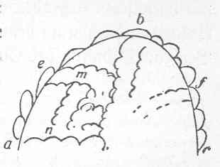

Kant: AA XIV, Physische Geographie. , Seite 607 |
|||||||
Zeile:
|
Text:
|
|
|
||||
| 01 | südwest in Nordost. Dagegen die westliche von America, weil dieses | ||||||
| 02 | Wasser dagegen aus Südwest nach Nordost trieb, wurden von Nordwest | ||||||
| 03 | zu Südost gerichtet. Die ostliche Küsten von Südafrica und Amerika | ||||||
| 04 | hatten aus dem Antrieb der Chaotischen Materie eine richtung von | ||||||
| 05 | Südost zu Nordwest. Dagegen wurde auf der Westseite durch den | ||||||
| 06 | Abflus des aeqvator Meeres das Ostliche aufgehoben und blieb nur | ||||||
| 07 | das von Süden nach Norden. ) | ||||||
| 08 | Neben 6056—15: | ||||||
| 09 | (s Allmählig verflächte sich das feste Land, und dadurch wurden die | ||||||
| 10 | Bassins weiter, aber bekamen auch weniger Zuflus aus der Erde; bis | ||||||
| 11 | dadurch wurden doch gewisse Höhen überschwemmt. Denn der Boden | ||||||
| 12 | wurde immer aufgefüllt und verflächte sich. ) | ||||||
| 13 | S. III: | ||||||
| 14 | Wenn a b c den Crater der chaotischen Eruption anzeigt, so musten | ||||||
| 15 | die Wasser von dem Umkreise zum Mittelpunkte |  |
|||||
| 16 | fließen, im Umkreise heftiger, nach der Mitte | ||||||
| 17 | schwächer, am starksten beym auslaufen. Durch | ||||||
| 18 | diese Rinnsale wurden Thäler vom Umkreise nach | ||||||
| 19 | der Mitte hin ausgehölt und zur seiten breite | ||||||
| 20 | Brüstungen aufgeworfen . Bey dem, welches die | ||||||
| 21 | Ribben oder aste der Hauptgebirge, die ihre | ||||||
| 22 | Schlängelungen hatten (Bourguet. Buffon. Bertrand. Wallerius. Gruner.), | ||||||
| 23 | auf waren. Als das wasser niedriger wurde, warfen diese seiten Gebirge | ||||||
| [ Seite 606 ] [ Seite 608 ] [ Inhaltsverzeichnis ] |
|||||||
;){kind=link}